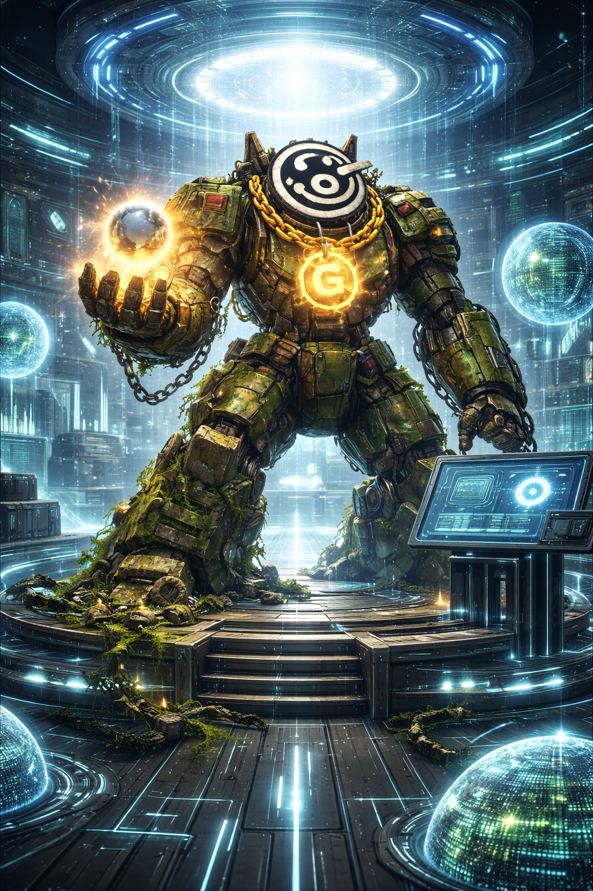

01
Launch Detection
Find tokens early, measure token age, and track how liquidity forms in the first minutes before most tools react.
Gorktimus Prime is building an AI-powered intelligence layer for the meme-coin economy. The first interface is the Gorktimus Intelligence Terminal — a Telegram-based system built for early launch detection, risk scoring, rug analysis, wallet behavior, and hype intelligence.

A real-time style preview of how the intelligence layer can surface behavior changes, early momentum, and pressure shifts before crowd awareness catches up.
The product direction is simple: compress delay, evaluate structure, and surface higher-quality signal faster.
Pull a ticker or contract address into the intelligence layer for immediate context on age, liquidity, and structure.
Track more than price by watching wallet distribution, momentum quality, liquidity formation, and market pressure.
Generate a cleaner view of launch quality, concentration danger, structural weakness, and confidence level.
Flag rug-style behavior, suspicious liquidity shifts, sell acceleration, and fast changes in token health.
Push signal through the terminal before the crowd fully reacts, helping traders see quality earlier.
The Gorktimus Intelligence Terminal is the first product inside the Gorktimus Prime ecosystem. It is designed to surface early signals through a clean Telegram terminal experience while laying the foundation for future dashboards, APIs, and deeper intelligence tools.
Most meme traders are reacting to movement after the move already started. Gorktimus Prime is being built to compress that delay and surface what matters earlier.
New coins appear every minute, hype rotates instantly, and most people only notice what is already running.
Most trackers show price and volume, but miss behavior, distribution risk, launch quality, and suspicious structure shifts.
Gorktimus Prime is designed to detect patterns, pressure points, and momentum quality before the crowd fully understands what is happening.
The vision is not to build another generic trading bot. It is to build an intelligence engine that combines market behavior, wallet context, launch timing, and momentum quality into something traders can actually use.
Find tokens early, measure token age, and track how liquidity forms in the first minutes before most tools react.
Score coins on lookup, watchlist entry, and alert refresh using liquidity, age, behavior shifts, and risk flags.
Detect dangerous combinations like draining liquidity, worsening concentration, rising sells, or suspicious launch structure.
Measure whether momentum looks organic or manufactured by comparing trading acceleration, distribution, and liquidity quality.
Gorktimus is not positioned as a generic bot. It is designed to surface specific classes of signal that matter when markets move fast.
Surface tokens early when liquidity appears and initial structure begins forming, before wider crowd attention shows up.
Flag behavior shifts like draining liquidity, worsening holder concentration, sell spikes, and unstable structure.
Track whether a watched coin is strengthening or weakening through buys, sells, liquidity movement, and market pressure.
Compare acceleration, structure, and liquidity quality to separate stronger organic momentum from low-quality hype.
Preview how the intelligence layer evaluates a token by reading liquidity, concentration, market structure, and momentum quality.
The longer-term direction is bigger than one interface. The terminal is the first entry point into a broader intelligence stack.
The site should communicate product direction clearly. This is the core litepaper structure retained for Gorktimus Prime.
Meme traders are often late because movement begins before most tools provide useful context.
Gorktimus reads liquidity, risk, concentration, and pressure quality before the crowd fully catches up.
Telegram is the first interface, followed by deeper modules, richer analytics, dashboards, and API access.
Build the intelligence layer for meme-coin markets rather than another generic trading bot.
Start with terminal utility, then expand into broader behavior intelligence and full platform infrastructure.
Gorktimus Prime starts with the Gorktimus Intelligence Terminal because speed matters. The long-term vision is a broader intelligence ecosystem with multiple interfaces built on the same core logic.
Telegram-based intelligence terminal with coin lookup, watchlist alerts, risk scoring, new coin scans, and foundational rug detection.
Whale tracking, wallet-distribution intelligence, deployer behavior analysis, trend monitoring, and higher-confidence scoring.
Dashboard, API access, richer analytics, contributor tools, and a broader AI-powered meme intelligence ecosystem.
Gorktimus Prime is being built for people who want signal before noise. The Telegram terminal is the first interface. The broader intelligence layer comes next.